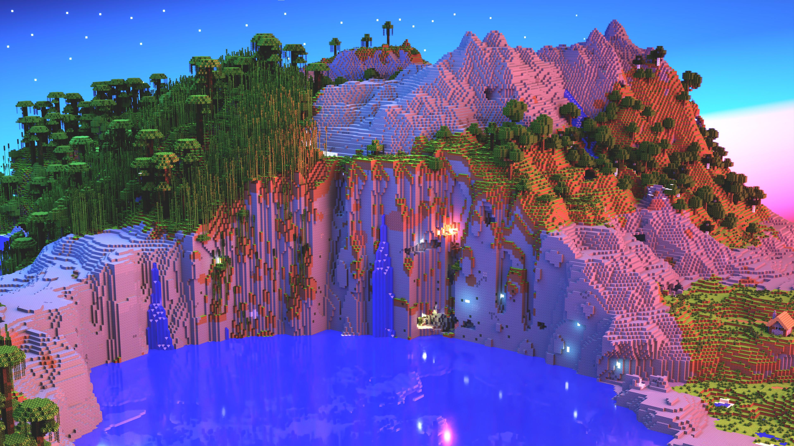
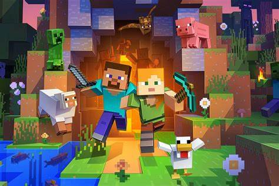

Minecraft


Mincraft is a fun to play single and multiplayer game. It was created in March 17, 2009 by Markus "Notch" and later sold it to microsoft in
September 2014, after selling 15 million copies of Minecraft across gaming consoles, Notch sold out to Microsoft in a $2.5 billion cash deal.
In minecraf there 4 diffrent modes
Survival-In this mode, players have to gather all their materials to build, craft items and tools and gain experience points.
There is a health, hunger, and armor bar, an inventory, and also a oxygen bar when underwater, suffocating, or in lava.
When a player's hearts (health) drop to zero, the player dies and spawns at the spawn point.
On death, the player leaves smoke, drops all experience and items, and a death message. Max reach is 5 blocks.
Creative- The player has an unlimited amount of almost all the items and blocks in the game, and can destroy them instantly. Players are immortal, apart from falling into the void,
and do not have health, no armor or hunger, and can fly. The player has some items from Survival mode inaccessible, e.g. spawn eggs.
The player is not able to see command blocks if they look through the Creative GUI -
they have to spawn command blocks via the /give or /setblock commands. Max reach is 6 blocks.
Adventure- Players can interact with items such as levers and buttons, and can interact with mobs. But,
they only get to demolish blocks through tools with a Can Destroy data tag, and place blocks down only if the block they have in their inventory has a Can Place On data tag
utilizing this mode on adventure maps. Max distance of 5 blocks.
Spectator- When in Spectator mode, players can clip through blocks and fly freely. The player can't interact with blocks, entities or their inventory.
Hardcore- Hardcore is just like survival but if you die one you can not respawn.
In minecraft there are diffrent versons. The two primarily played versons are jawa and bedrock.
One of the biggest differences between Java and Bedrock is the world format.
Bedrock stores worlds in the LevelDB format, while Java stores them in the Anvil format. Because of this,w
most third-party applications developed for modifying a world will only be usable in the one it was made for.
The two also employ a reasonably different block format. Java has flattened its block format employing a special string per block,
and separating the state of that block separately. In the same way, Bedrock uses a string-based system with block states,
although some blocks have their data aggregated by data value. Blocks are therefore given different names between the versions due to this.
For instance, granite has been defined as stone 1 in Bedrock, but in Java it's called granite.